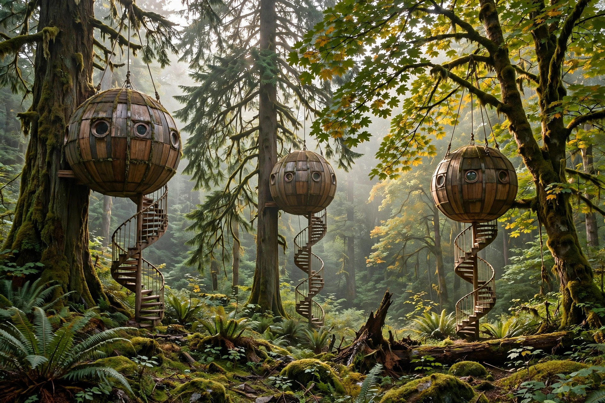
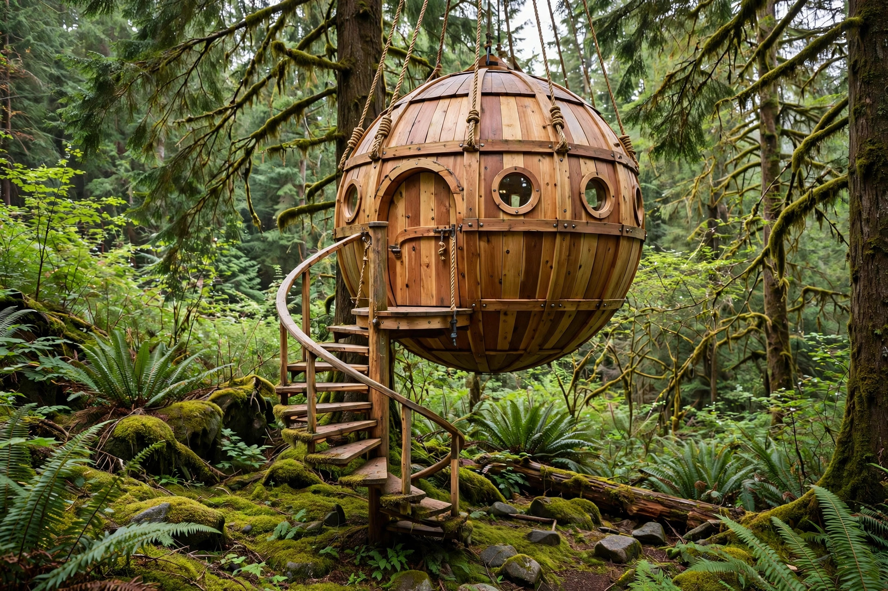
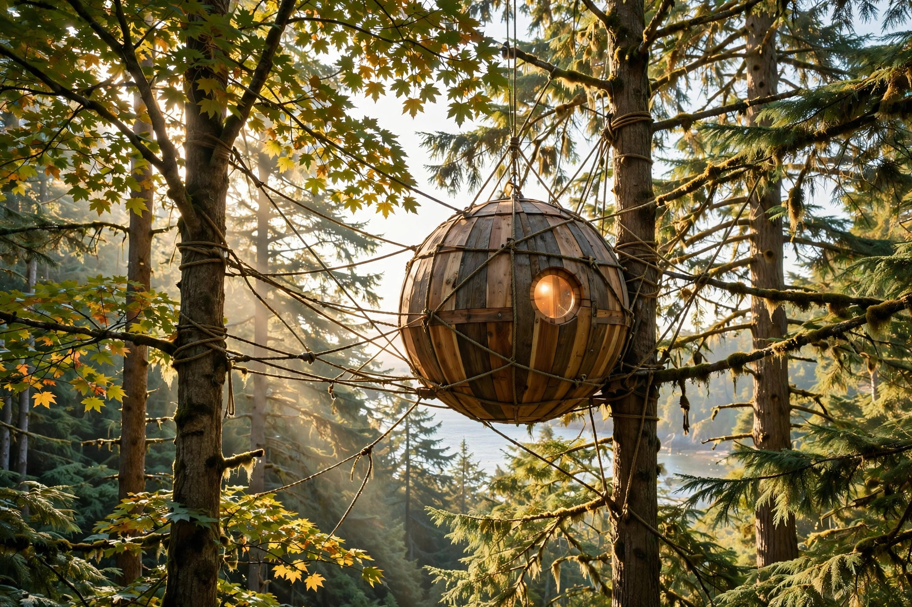
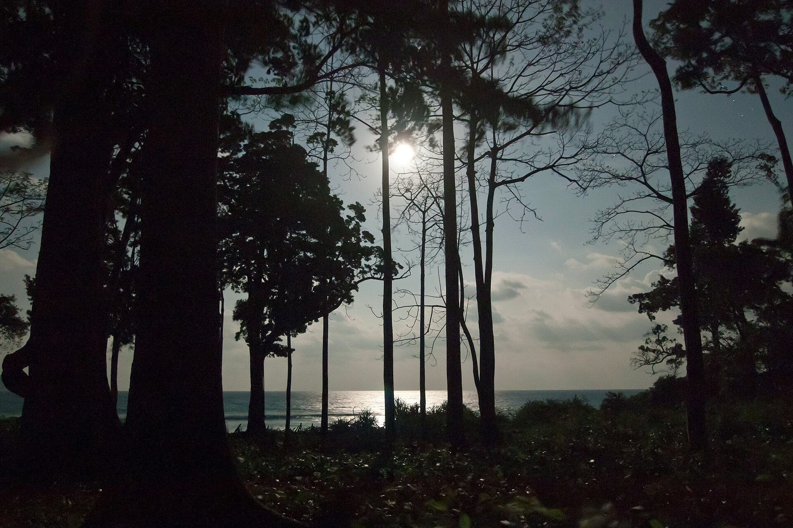
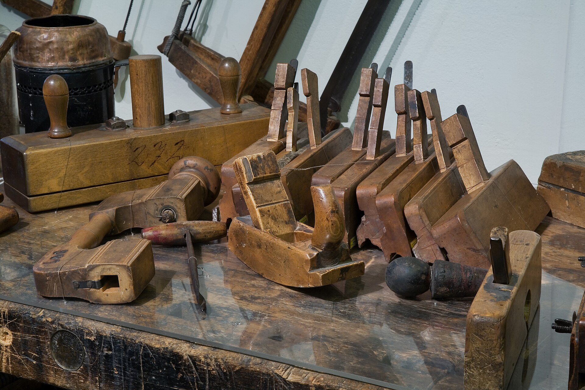
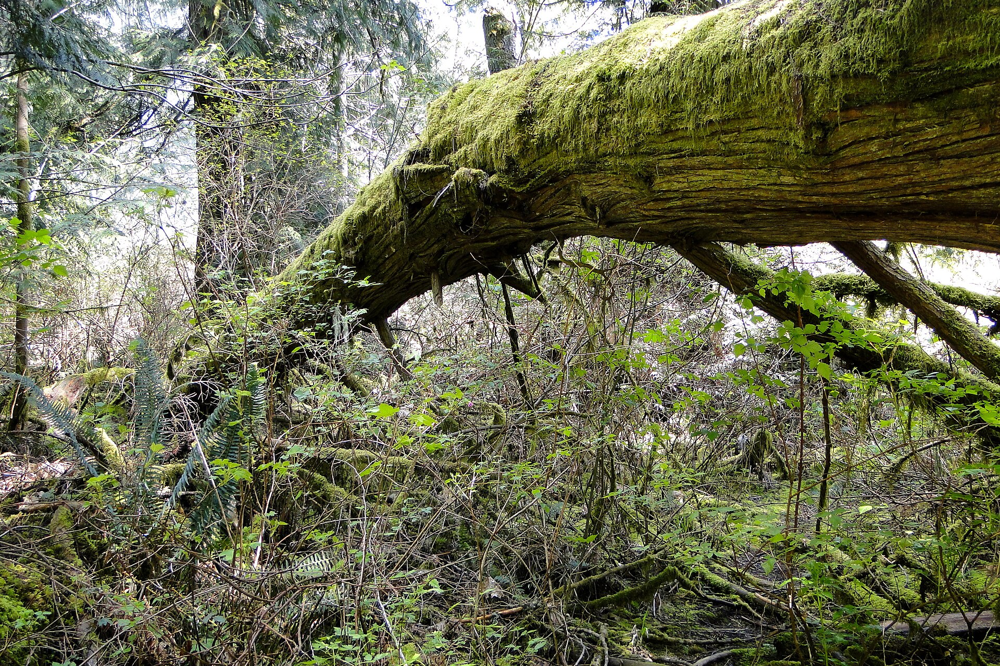
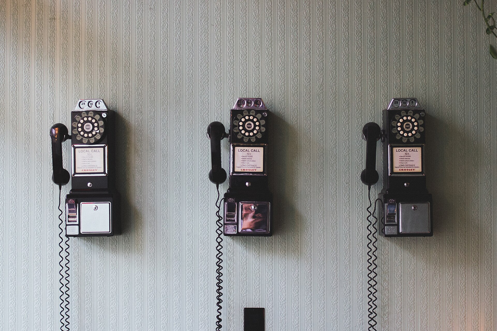

Pulse HQ · Postbox
Free Spirit Spheres
TEST CLIENT — simulation only; this postbox is a Pulse HQ rehearsal and is never sent to the business. Seven finished Facebook posts with their images.
Post 1 — Three spheres in the forest
Test delivery · rehearsal pack

Some hideaways are built. Ours were crafted — round, whimsical, and tucked into the calm at 420 Horne Lake Rd in Qualicum Beach, BC.
Free Spirit Spheres is home to three handcrafted spheres — Eryn, Melody, and Luna — each one waiting quietly among the trees for grown-ups in need of a slower pace.
Come and find your round little corner of the forest.
#FreeSpiritSpheres #QualicumBeach #TreehouseStay #VancouverIslandGetaway
Post 2 — Meet Eryn
Test delivery · rehearsal pack

Meet Eryn.
One of our three spheres at Free Spirit Spheres in Qualicum Beach, Eryn carries her name like a small woodland secret — round, handcrafted, and made for quiet days and unhurried evenings.
If your idea of a getaway is calm, craft, and a sphere of your very own, Eryn would love to be remembered.
#ErynSphere #SphericalTreehouse #QualicumBeachBC #ForestRetreat
Post 3 — Meet Melody
Test delivery · rehearsal pack

Meet Melody.
A sphere with a song in its name, Melody is one of the three handcrafted spheres at Free Spirit Spheres, here at 420 Horne Lake Rd, Qualicum Beach.
No rush, no noise chasing you from room to room — just a round, craft-proud hideaway and the gentle hush of an adults-only forest escape.
Let the days slow down to Melody's tempo.
#MelodySphere #TreehouseResort #AdultsOnlyGetaway #BCTravel
Post 4 — Meet Luna
Test delivery · rehearsal pack

Meet Luna.
Named for the moon, Luna is one of our three spheres at Free Spirit Spheres in Qualicum Beach — handcrafted, whimsical, and settled into the forest calm.
She is made for stargazing moods, deep breaths, and nights that feel a world away from the everyday, even though you found her right here in BC.
When the moon is up, Luna is in her element.
#LunaSphere #MoonlitRetreat #QualicumBeach #UniqueStaysBC
Post 5 — Built by hand
Test delivery · rehearsal pack

Every curve here has a craftsman's hand behind it.
Free Spirit Spheres was built by your hosts, Tom and Rosie. Tom is our Master Craftsman and Creative Director, and that craft-proud care is in every sphere — Eryn, Melody, and Luna alike.
These are not rooms that rolled off an assembly line. They are spheres, made with patience, pride, and a little bit of whimsy, in Qualicum Beach, BC.
Built by hand. Hosted with heart.
#HandcraftedTreehouse #MasterCraftsman #FreeSpiritSpheres #MadeInBC
Post 6 — Just for grown-ups
Test delivery · rehearsal pack

This forest calm is just for grown-ups.
Free Spirit Spheres is an adult-only getaway — 16 years and over — in Qualicum Beach, BC. That means quiet mornings, unhurried afternoons, and evenings in Eryn, Melody, or Luna that stay blissfully peaceful.
Leave the noise behind, step into a sphere, and let the trees do the rest.
#AdultsOnlyRetreat #ForestCalm #PeacefulGetaway #VancouverIsland
Post 7 — How to book
Test delivery · rehearsal pack

Booking a sphere is delightfully old-fashioned: you call us.
All bookings at Free Spirit Spheres are made by phone — no booking engines, no endless clicks. Just call 250-757-9445 between 9:00 AM and 8:00 PM, and talk to a real person about Eryn, Melody, or Luna.
You will find us at 420 Horne Lake Rd, Qualicum Beach, BC. Pick up the phone, and let your forest escape begin the simple way.
#BookDirect #QualicumBeachStay #TreehouseBooking #BCGetaway